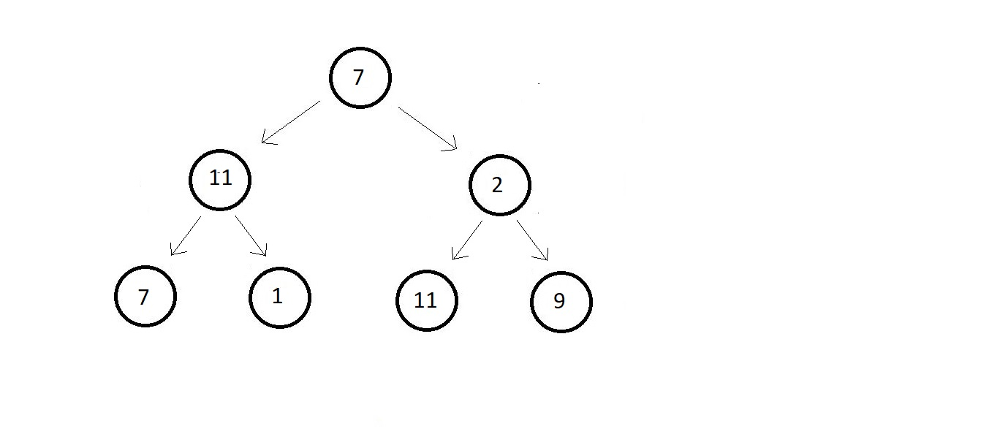
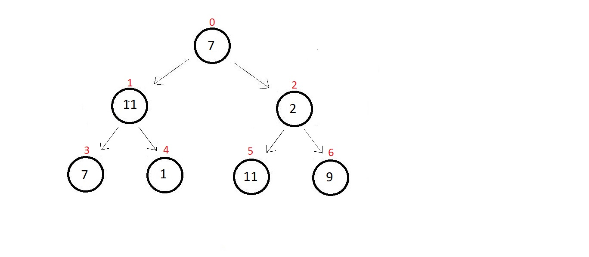
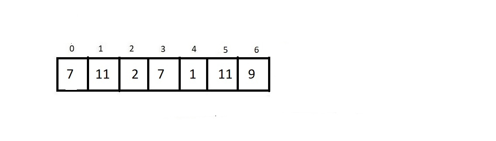
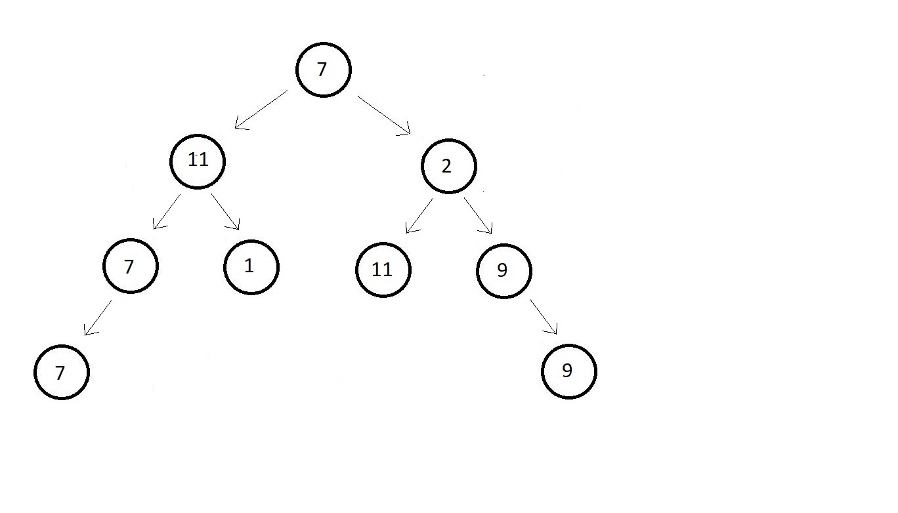
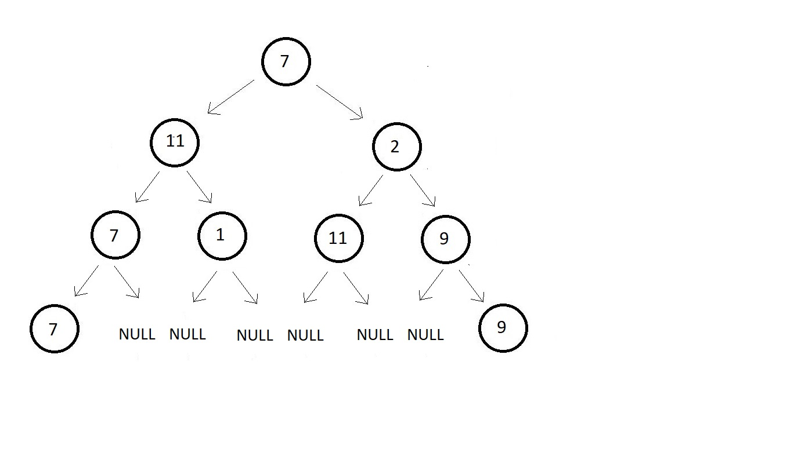
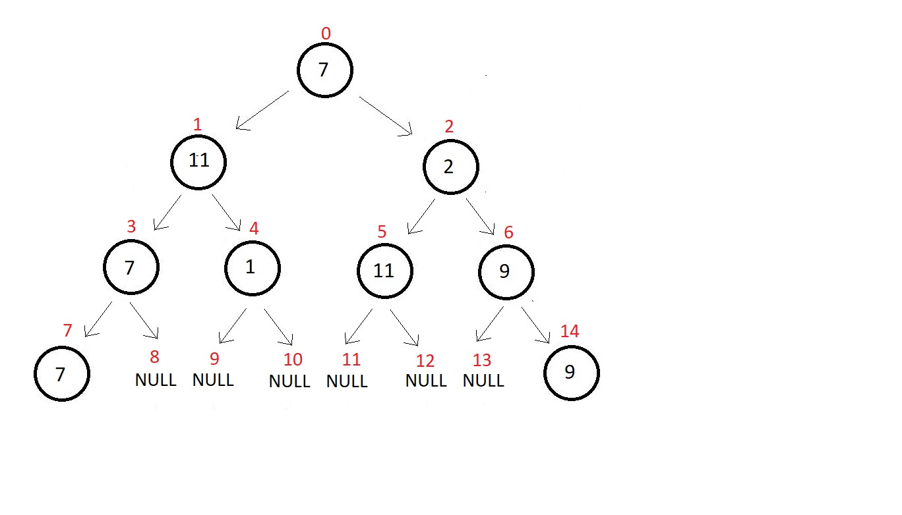
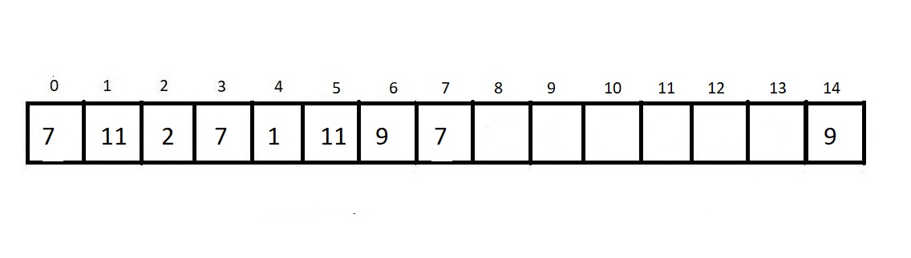
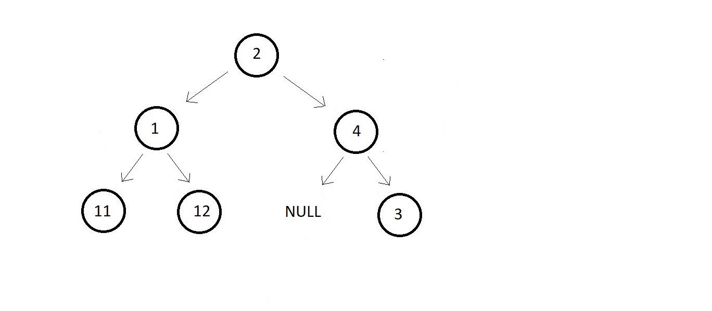

Representation of a Binary Tree
So, the first way to represent a binary tree is by using arrays. We call this 'array representation'. And this method is not very recommended for representing binary trees. We'll know it shortly
Array representation of Binary trees
- Arrays are linear data structures and for arrays to function, their size must be specified before elements are inserted into them.
- Speicifying size is the biggest demerit of representing binary trees using arrays.
- Suppose you declare an array of size 100, and after storing 100 nodes in it, you cannot even insert a single element further, regardless of all the spaces left in the memory.
- If we copy the whole array to a new array of bigger size is not considered a good practice.
Anywars, we will use an array to represent a binary tree. Suppose we have a binary tree with 7
nodes.

And there are actually a number of ways to represent these nodes via an array. I’ll use the most
convenient one where we traverse each level starting from the root node and from left to right and
mark them with the indices these nodes would belong to.

And now we can simply make an array of length 7 and store these elements at their corresponding
indices.

And you might be wondering about the cases where the binary is just not perfect. What if the
last level has distributed leaves? Then let me tell you, there is a way out for that as well. Let’s
consider one case here. A binary tree with 9 nodes, and the last two nodes on the extremities of the
last level.

Here, while traversing we get stuck at the 8th index. We don’t know if declaring the last node
as the 8th index element makes it a general representation of the tree or not. So, we simply make
the tree perfect ourselves. We first assume the remaining vacant places to be NULL.

And now we can easily mark their indices from 0 to 14.

And the array representation of the tree looks something like this. It is an array of length 15.

- This is no an efficient approach
- Traversing, insertion, deletion in binary using array is troublesome
- Each operation becomes quite costly to accomplish.
- That size constrain is also the big problem.
- So we have another method to represent binary trees called the linked representation.
- Don't confuse this with 'linked lists' the linear data structures.
Linked Representation of Binary trees
- This method of representing binary trees using linked nodes is considered the most efficient method of representation.
- Here we use doubly-linked lists
- Using links makes the understanding of binary tree very easy. It actually is best for visualize the tree.
Suppose we have a binary tree of 3 levels.

- As doubly linked list help us in traversal in both to the left and the right nodes.

- Above represents a real tree node.
- Unlike the array representation where all then nodes succumbed to a 2D struture. And now we can very easily transform the whole tree into its linked representation which is just how we imagined it would have looked in real life.
- So, this was the representation of the binary tree we saw above using linked representation
- What are these nodes?
- These are structures having three structrure members, first a data element to store the data of the node, and then two structure pointers to hold the address of the child nodes, one for the left and the other for the right.
Definition of struct Node in C language
struct node{
int data;
struct node* left;
struct node* right;
};